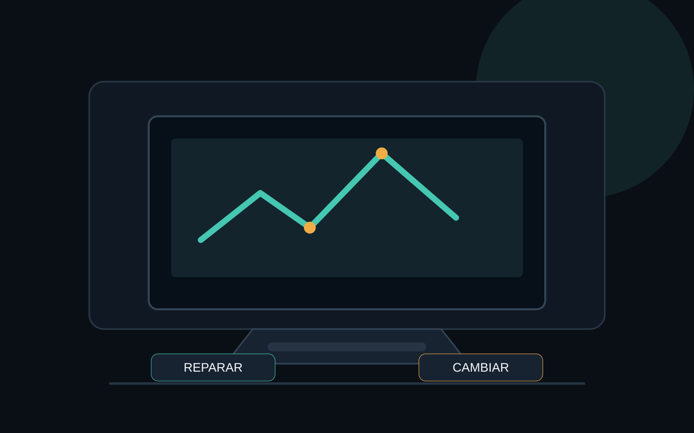

La mayoría de los usuarios no saben si es necesario reparar o cambiar su laptop. La respuesta depende de varios factores, como el uso, el estado y el costo de la reparación. En esta guía, te explicaremos cómo evaluar la situación y tomar la decisión adecuada.
Errores comunes que pueden llevar a la necesidad de reparación
Algunos errores comunes que pueden requerir reparación incluyen:
• Cargador defectuoso o dañado
• Problemas de conexión
• Pantalla rota o dañada
• Problemas de software o sistema operativo
En estos casos, la reparación puede ser una opción viable. Sin embargo, si el problema es más grave o el laptop está en el final de su vida útil, puede ser más económico cambiarlo por un nuevo.
¿Cuándo es el momento de cambiar tu laptop?
Hay varios factores que debes considerar antes de decidir cambiar tu laptop. Algunos de los más importantes incluyen:
• Uso intensivo: Si usas tu laptop durante largas horas o lo llevas con ti en todo momento, puede ser más económico cambiarlo por un nuevo que invertir en una reparación.
• Estado del sistema: Si tu laptop tiene más de 3 años y no se ha actualizado en un tiempo, puede ser un buen momento para cambiarlo por un nuevo modelo con características más modernas.
• Costo de la reparación: Si el costo de la reparación es mayor que el valor del laptop, puede ser más económico cambiarlo por un nuevo.
Recomendaciones útiles
Algunas recomendaciones útiles para evaluar la situación de tu laptop y tomar la decisión adecuada incluyen:
• Realizar un diagnóstico: Antes de decidir si reparar o cambiar tu laptop, es importante realizar un diagnóstico para determinar el problema y su causa.
• Comparar precios: Investiga y compara precios de laptops nuevos y usados para determinar si la reparación o el cambio es más económico.
• Considerar la seguridad: Si tu laptop tiene problemas de seguridad o es vulnerable a ataques, puede ser más seguro cambiarlo por un nuevo con características de seguridad más avanzadas.
Advertencia de seguridad
Al trabajar con componentes electrónicos, es importante tomar medidas de seguridad para evitar lesiones o daños.
• Utiliza herramientas adecuadas: Asegúrate de tener las herramientas adecuadas para trabajar con componentes electrónicos, como un multímetro y un kit de herramientas de reparación.
• Trata la electricidad con cuidado: Nunca toques componentes electrónicos con las manos desnudas, y asegúrate de que la electricidad esté desactivada antes de comenzar a trabajar.
• Utiliza protección personal: Siempre utiliza protección personal, como gafas de seguridad y guantes, para evitar lesiones o daños.
Con estas recomendaciones y advertencias, podrás tomar la decisión adecuada para tu laptop y asegurarte de que estás utilizando un equipo seguro y eficiente.